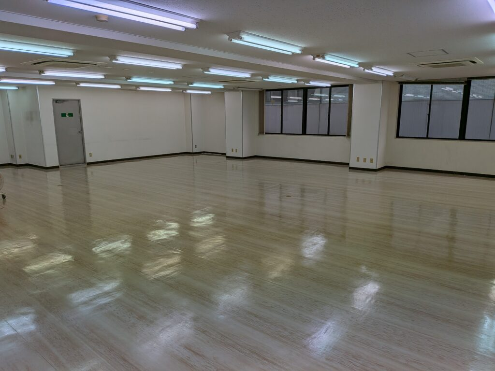
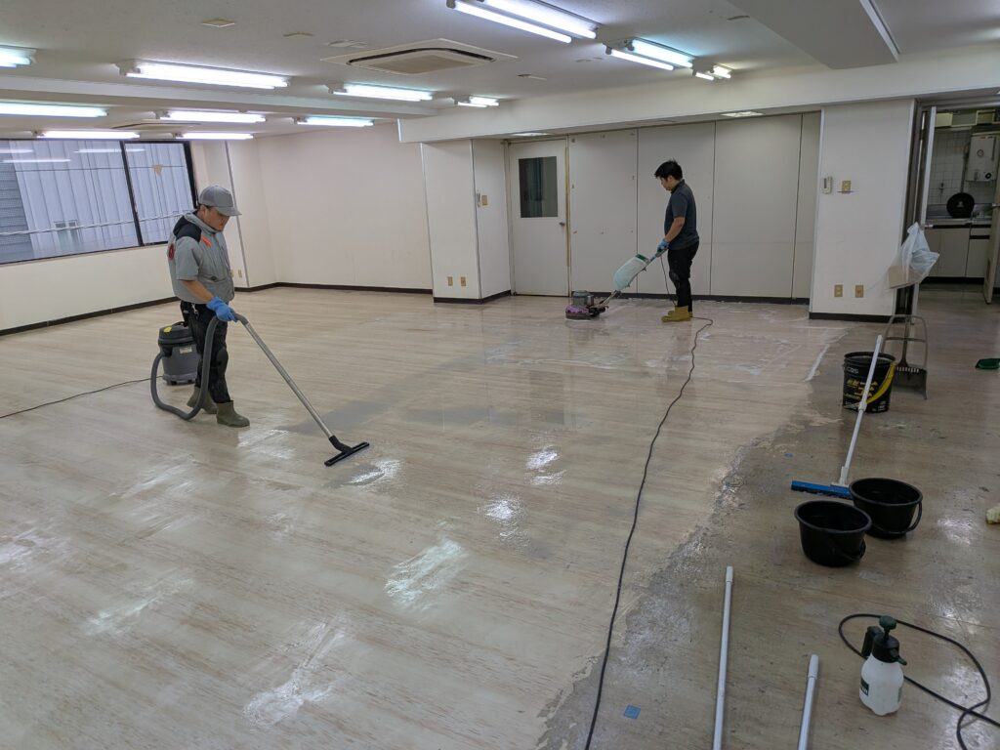
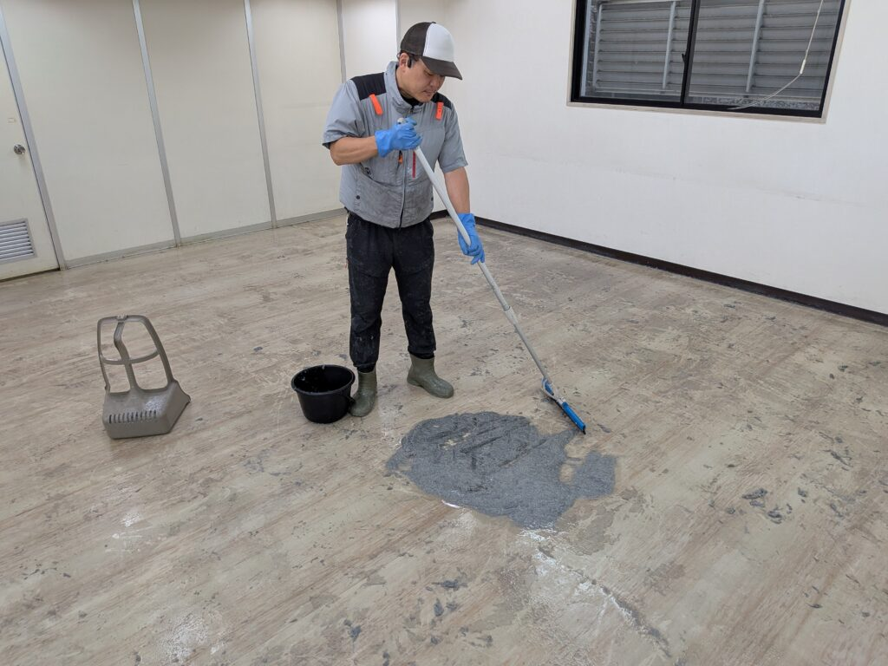
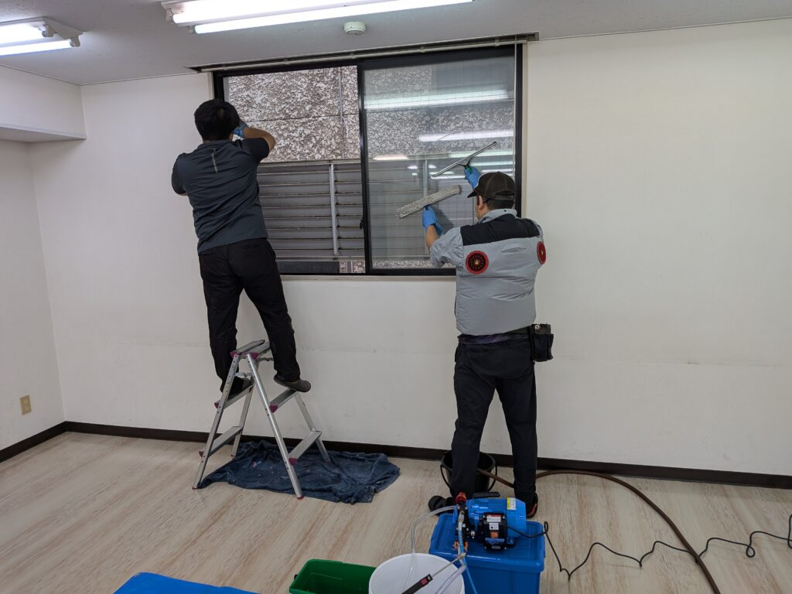
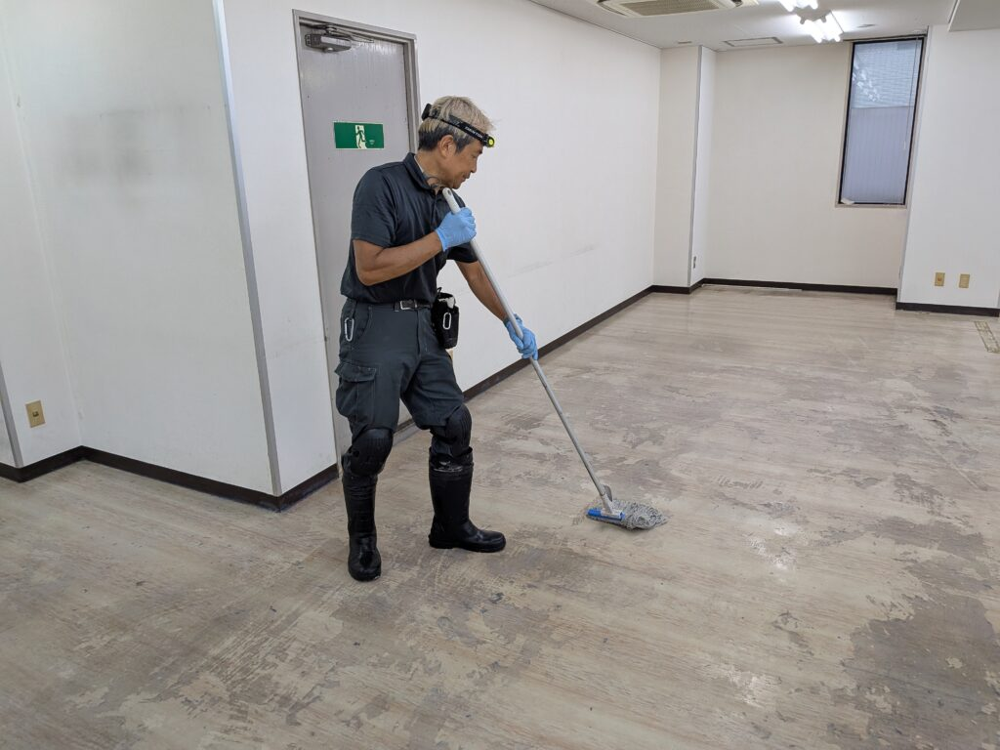
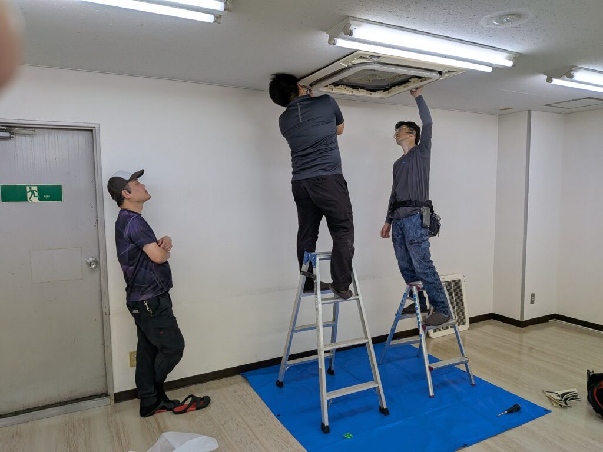
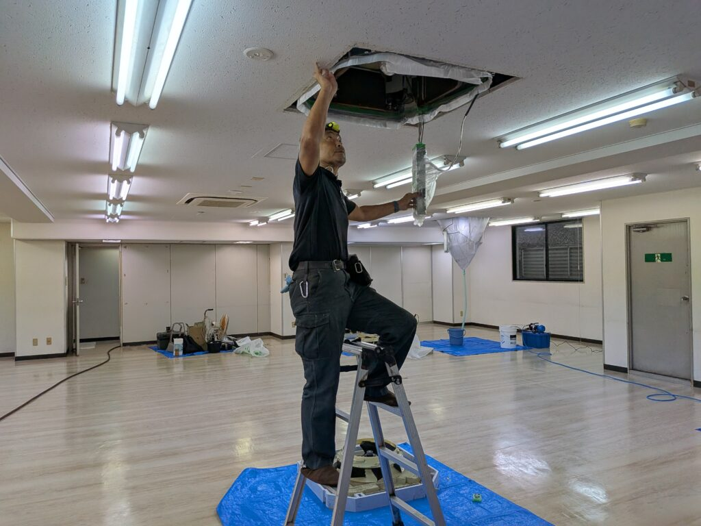
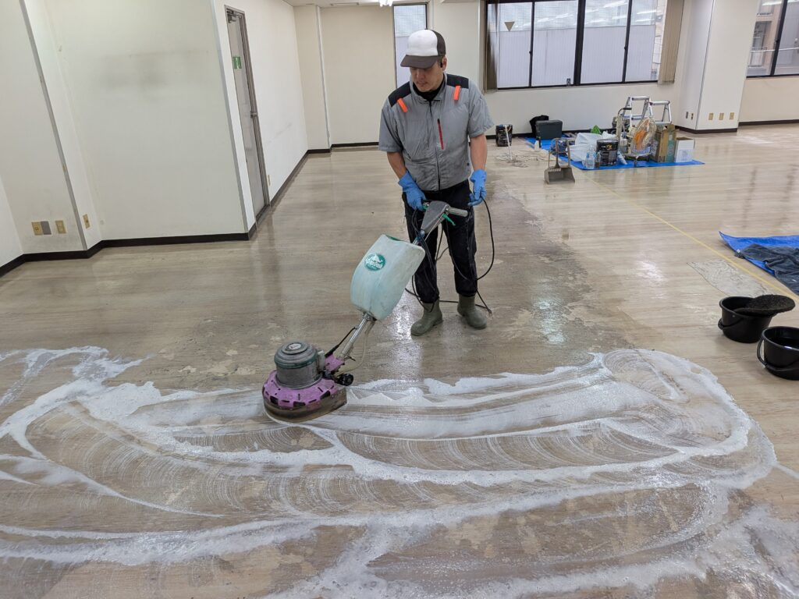

東京都神田三崎町のオフィスフロアーSビル様の賃貸フロアー床面の剥離洗浄クリーニング、スペシャルワックス仕上げ+窓サッシクリーニング+天カセ4方向6台のオフィスクリーニングを、3日間DAIZENプロフェッショナルチームメンバーのべ11人で実施しました！

神田三崎町のオフィスビルのリピーターS様の賃貸フロアー床面剥離洗浄クリーニング+ワックス仕上げ+オフィス窓サッシクリーニング+オフィス天カセ4方向6台のクリーニングを、3日間掛けてフルセットクリーニングしました！この内容の濃さから、DAIZENプロフェッショナルチームメンバーが3日間のべで11人フル稼働して徹底的に綺麗にしました！30年という長きに渡る床面フロアーの堆積汚れ、ワックス重ね塗り堆積汚れを、剥離洗浄クリーニングで、5回以上ポリッシャー洗浄と、特殊剥離洗浄クリーニングでじっくりと綺麗に仕上げて行きました。床面洗浄クリーニングと、棲み分けしながら、同時並行して天カセ4方向6台のクリーニングも実施しました！とても工数が掛かりましたが、すっかり綺麗になりました！リピーターS様お客様も喜んでいらっしゃいました、ありがとうございました！






